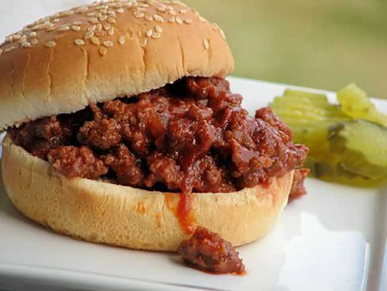

Super Easy Sloppy Joes

Description
One of the easiest meat-forward suppers to throw together will always be sloppy joes. This sweet and savory meat sauce can be served in the traditional way inside a bun, or you can get inventive. Try it as a topper for a baked white or sweet potato, on top of rice or pasta, or even with polenta.
Ingredients
- 3 pounds ground beef
- 1 cup chopped yellow onion
- 1 cup finely chopped celery
- 1 (12 ounce) bottle tomato-based chili sauce
- 1/4 cup apple cider vinegar
- 1/4 cup packed brown suger
- 1 teaspoon prepared yellow mustard Optional
- Bread rolls
Steps
- Crumble ground beef into a large pot or Dutch oven over medium-high heat. Cook, stirring frequently, until evenly browned. Drain off grease.
- Add onion and celery to ground beef in the pot. Cook and stir until onion is tender, about 3 minutes. Reduce heat to medium and pour in chili sauce. Stir in vinegar, sugar, and mustard. Simmer until mixture reaches desired thickness.
- Place mix onto bread rolls and enjoy!